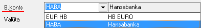
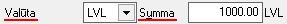
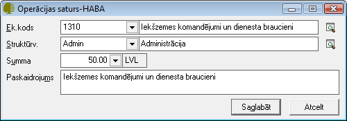

Bankā izmaksāts avanss¶
Bankas izejošā dokumenta veids Bankā izmaksāts avanss jāveido, kad tiek izmaksāta nauda uzņēmuma Avansu personai . Šī dokumenta veida izmantošana nodrošina automatizētu izmaksāto avansa summu uzskaiti Avansa norēķinu dokumentā. Bankas avansa maksājums vienlaicīgi tiek parādīts Bankas izdevumu un Avansu norēķinu dokumentu žurnālos. Dokumenta izdruka ir standarta maksājuma uzdevums.
JaunaBankā izmaksāta avansa dokumentapievienošana¶
Lai uzskaitītu izmaksātās avansu summas, un tās parādītos avansu norēķinu dokumentā, izmaksājot avansus, dokuments ir jāveido kā Bankā izmaksāts avanss. Dokumentā ir pieejams lauks persona, kur no Partneru saraksta var izvēlēties personas, kuru aprakstā ir pazīme Avansu persona .
Izvēloties dokumenta veidu Bankā izmaksāts avanss, tiks atvērts jauns logs:

- scale
100%
Bankā izmaksāta avansa Virsraksta aizpildīšana¶
Lai aizpildītudokumenta Virsrakstu, nepieciešams:
1. Norādīt Uzņēmuma bankas kontu, no kura šis maksājums tiks izpildīts:
- scale
100%
Izvēlēties Datumu, kurā šisdokuments tiek veidots:

- scale
100%
3. Norādīt nepieciešamo Bankas maksājuma valūtu un ievadīt kopējo Dokumenta summu:
- scale
100%
4. No saraksta izvēlēties nepieciešamo personu, kuras aprakstā ir pazīme Avansu persona , kurai šis naudas avansa pārskaitījums tiks noformēts:

- scale
100%
Izvēloties nepieciešamo Personu, lauki Nor.konts , Pers.k. , Banka un Kods tiks aizpildīti automātiski no Partnera kartiņas .
Bankā izmaksāta avansaSatura aizpildīšana¶
Lai aizpildītu dokumenta Saturu, dokumenta satura daļā nepieciešams nospiest pogu.. image:: images_ozols/24708.png :scale: 100% un tiks atvērts operācijas satura logs, kurā nepieciešams aizpildīt satura ierakstus (uzņēmumā izmantotās dimensijas) un norādīt satura ieraksta summu:
- scale
100%

- scale
100%
Dokumenta saturs var sastāvēt no vairākiem satura ierakstiem, kas kopsummā veido Dokumenta Virsrakstā norādīto summu.Pievienot nākamo satura ierakstu iespējams, satura daļā atkārtoti nospiežot pogu .. image:: images_ozols/24708.png :scale: 100% .
Maksājuma dokumenta Mērķa un Satura aizpildīšana¶
Maksājuma dokumentu lauki Mērķis un Saturs tiek drukāti maksājuma uzdevuma rindā Maksājuma mērķis.
Lauku Mērķis , iespējams aizpildīt manuāli vai izvēloties no Bankas paskaidrojumu saraksta :

- scale
100%
Aktivizējot izvēli Saturs, laukā tiek salikti dokumenta satura finanšu (EK) kodi un summas, līdz ar to iespējams automatizēti iegūt informāciju par summas sadalījumu pa EK kodiem (Fin.kat.)vai maksājuma PVN summu:

- scale
100%
Sagatavojot Bankā izmaksātu avansu, dokumentam, kurš sagatavots izvēloties uzņēmuma Banku kontu , kuram piesaistīta kāda no Bankas elektronisko norēķinu sistēmām , ekrāna formā automātiski ir aktivizēta izvēle Eksportēt uz bankas elektronisko norēķinu sistēmu:

- scale
100%
Visi dokumenti, kuriem ir šāda izvēle, var tik eksportēti uz elektronisko banku norēķinu sistēmu, lai būtu iespējams veikt Datu apmaiņa ar banku .
Bankā izmaksāta avansastarpbankas datu aizpildīšana¶
Bankas izdevumu dokumentiem iespējams aizpildīt datus par starpbanku, Maksājuma uzdevuma logā aktivizējot izvēli Starpbanka:

- scale
100%
Kad visi nepieciešamie lauki ir aizpildīti, Bankā izmaksāts avanssir sagatavots un to ir iespējams:
1. Saglabāt,nospiežot pogu .. image:: images_ozols/24615.jpg :scale: 100% -dokuments tiks saglabāts un būs pieejams apskatei/labošanai/grāmatošanai Bankas izdevumu žurnālā .
2. Apstiprināt, nospiežot rīku joslā pogu .. image:: images_ozols/24740.png :scale: 100% - Bankā izmaksāts avansstiks Apstiprināts un to būs iespējams Grāmatot.
Dokumenta - Bankā izmaksāts avanss grāmatošana¶
Bankā izmaksātu avansu iespējams grāmatot no atvērta dokumenta vai izvēloties (iezīmējot)dokumentu Bankas izdevumu žurnālā .
Lai iegrāmatotu Bankā izmaksātu avansu, dokumentu nepieciešams Apstiprināt, nospiežot rīku joslā pogu .. image:: images_ozols/24740.png :scale: 100% .
Apstiprinātu dokumentu ir iespējams grāmatot, nospiežot rīku joslā pogu .. image:: images_ozols/24741.png :scale: 100% .
Instrukcija - Dokumentu grāmatošanas principi
PievienotāBankā izmaksātāavansalabošana¶
Labojumus saglabātajādokumentā iespējams veikt atverot dokumentu Bankā izmaksāts avanss, kurš vienlaicīgi pieejams apskatei/labošanai:doc:Bankas izdevumu<224> un Avansu norēķinu dokumentu žurnālos. Lai veiktu labojumus,dokumentunepieciešams atvērt, izmantojot rīku joslas pogu.. image:: images_ozols/24709.png :scale: 100% (ALT+A), unatvērtajāierakstā iespējams veiktnepieciešamos labojumus:

- scale
100%
Pēc labojumu veikšanas, veiktā izmaiņas iespējams .. image:: images_ozols/24615.jpg :scale: 100% vai .. image:: images_ozols/24617.jpg :scale: 100% .